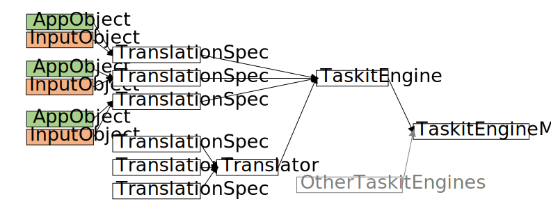
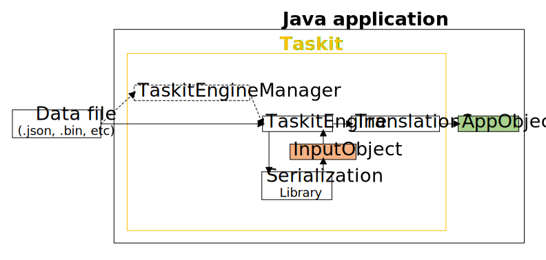
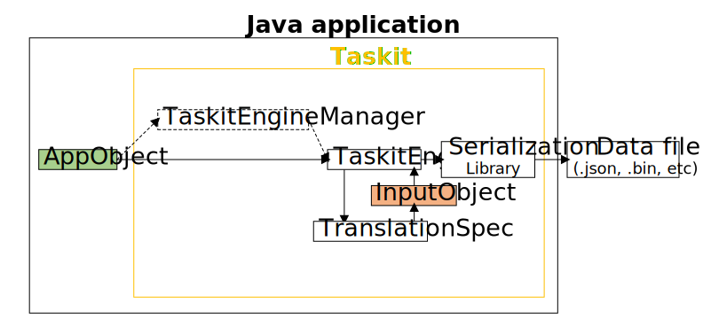

2 Core Taskit Library
The Core Taskit library defines the key components, common functionality, and process flow of Taskit. It provides interfaces, abstract classes, and classes that can be used to implement any serialization library.
2.1 High-Level Overview
Before jumping into the technical details of Taskit, it’s helpful to understand the core concepts at a high-level: what the key components are, how to set them up, and how data flows through them.
2.1.1 Key Components
Serialization library: there must be a Taskit implementation of the selected serialization library
Data file: the exact structure of the data file is dependent on the implemented serialization library
InputObject: a general term referring to a Java object native to the implemented serialization library
AppObject: a general term referring to a Java object that is native to the developer’s application
TranslationSpec: a Java object that defines how to translate between an InputObject and an AppObject
Translator: a Java object that bundles several TranslationSpecs that should/will often be used together
TaskitEngine: a Java object, specific to the selected serialization library, responsible for reading and writing files and translating Java objects
TaskitEngineManager: a Java object that can handle multiple TaskitEngines and direct requests to the appropriate TaskitEngine
Certain components are always required, and some components are only required for translation. Some components are completely optional.
2.1.1.1 Required Components
Serialization library
Data file
InputObject
TaskitEngine
2.1.1.2 Translation Required Components
AppObject
TranslationSpec
2.1.1.3 Optional Components
Translator
TaskitEngineManager
2.1.2 Setting Up Taskit
To prepare to use Taskit within a Java application, first select a serialization library for which there is a Taskit implementation. If one does not already exist, it is relatively easy to create one. Next, if translation is required, create TranslationSpecs. Optionally, if you have lots of TranslationSpecs, you can create a Translator to bundle them together.
To use Taskit, instantiate your TranslationSpecs and any Translators, add them to the TaskitEngine, and then instantiate it. The TaskitEngine is now ready to receive requests. If you choose to use a TaskitEngineManager, add the TaskitEngine instances to it and then instantiate it. Direct requests to the TaskitEngineManager instead of directly calling the TaskitEngine.
2.1.3 Process Flow
Data can take several paths through Taskit, such as:
read from a data file and deserialize
read from a data file, deserialize, and translate
serialize and write to a data file
translate, serialize, and write to a data file

When reading, deserializing, and translating a data file, the request is sent to the TaskitEngine. If the TaskitEngineManager is used, it receives the request first and then sends it to the correct TaskitEngine. The TaskitEngine uses the serialization library to read and deserialize the data file into an InputObject. The TaskitEngine then uses the InputObject’s class reference to select the correct TranslationSpec and then calls it. The TranslationSpec takes in the InputObject and returns an AppObject. The application now has an AppObject that it can use.

When translating, serializing, and writing an AppObject, the process is reversed. The AppObject is first translated into an InputObject which is then serialized and written to a data file.
2.2 Translation
2.2.1 TranslationSpecs
A TranslationSpec contains the specific instructions for how to translate between two Java objects: an InputObject and an AppObject.
A TranslationSpec can be added directly to a TaskitEngine or bundled into a Translator which in turn will add it to the TaskitEngine.
The Core Taskit library provides two TranslationSpec classes: ITranslationSpec and TranslationSpec. ITranslationSpec is an interface that declares four methods that all TranslationSpecs must implement: init, translate, isInitialized, and getTranslationSpecClassMapping. TranslationSpec is an abstract class that implements these methods as well as defining 4 abstract methods (listed below) that every concrete implementation must implement.
- translateInputObject
- translateAppObject
- getAppObjectClass
- getInputObjectClass
All TranslationSpecs receive a reference to a TaskitEngine during initialization, which can be used if it needs assistance translating a non-primitive object. Each TranslationSpec also provides a mapping of the types it can translate, which is used by the TaskitEngine for it’s internal mapping. During translation, a TranslationSpec validates the provided object, determines if it should be translated as an InputObject or an AppObject, and then delegates the translation work to the concrete implementation.
2.2.2 Translators
A Translator is an optional convenience class whose primary purpose is to bundle several TranslationSpecs that will be used together and provide a way to add them to a TaskitEngine. It also contains a dependency mechanism that gives developers the ability to group TranslationSpecs more logically while still maintaining functionality.
A Translator is a non-extendable concrete class. Normally, this would be an interface, but how Translators are used behind the scenes is a bit complicated, so instead we provided a convenience class to handle that for you.
Every Translator must have a unique identifier in the form of a TranslatorId. This ID serves as a distinguisher between Translators and is an interface that must be implemented by the developer. This identifier is also used for the aforementioned dependency mechanism.
Every Translator must also have an initializer. The initializer is a consumer of a TranslatorContext. A TranslatorContext serves as a middleman between a Translator and a TaskitEngineBuilder. The builder of the TaskitEngine creates the TranslatorContext giving it a reference to itself, and the context provides a method by which to obtain that reference. Because each serialization library will have a specific TaskitEngine implementation, there may be cases where that implementation requires specific methods that don’t exist on the core TaskitEngine. So, a Translator and by proxy a TranslatorContext cannot just use a generic TaskitEngineBuilder, they must instead use a TaskitEngineBuilder specific to the given serialization library that is being used. As such, the initializer will have full access to all of the relevant methods on a TaskitEngineBuilder, allowing a Translator to do more than just add TranslationSpecs; however, this is very specific to a given serialization library and is not the norm, as previously stated, Translators are primarily used to group TranslationSpecs that will be used/are dependent on one another. If you are familiar with GCM, Translators are very akin to the Plugin concept of GCM.
Translator dependencies are optional but must follow a directed acyclic graph (DAG) pattern; there cannot be duplicate Translators, missing Translators, nor cyclic Translator dependencies. The use case of a Translator dependency is a case where one or more of a Translator’s TranslationSpecs has a dependency on another TranslationSpec that wouldn’t logically be grouped within the same Translator; for example, you might have a Translator that groups TranslationSpecs for property value classes, and another Translator that contains an implementer of a property value class, and thus would need to use a TranslationSpec from the property value Translator – the latter Translator would add a dependency on the property value Translator.
2.3 Engine
2.3.1 TaskitEngines
A TaskitEngine is responsible for reading and writing data files and translating Java objects.
The Core Taskit library provides a TaskitEngine abstract class and a ITaskitEngineBuilder interface. It is the developer’s responsibility to ensure there is a TaskitEngine implementation for the selected serialization library. The implementation must implement the abstract methods declared in the TaskitEngine abstract class and have a builder that implements the ITaskitEngineBuilder interface. At a minimum, the implementation must implement the methods below:
TaskitEngine
writeToFile
readFile
ITaskitEngineBuilder
addTranslationSpec
addTranslator
Every TaskitEngine must have a unique identifier in the form of a TaskitEngineId. This ID serves as a distinguisher between TaskitEngines and is an interface that must be implemented by the developer. Every TaskitEngine is constructed with a TaskitEngineData, which follows a builder pattern. At a minimum, the builder must be provided with one or more TranslationSpecs, which it stores in both a Map and a Set. The Map provides a mapping of types to the TranslationSpec capable of translating them. Generally, the Map will contain each TranslationSpec twice, so to avoid TranslationSpecs being initialized twice, they are also stored in the Set. If Translators are provided, the TaskitEngineData validates them to ensure they are initialized and follow a directed acyclic graph (DAG) pattern and then discards them. It is the responsibility of the concrete TaskitEngine implementation to ensure Translators are initialized.
The TaskitEngine class contains the core logic that all TaskitEngines will use. Normally, this would be an interface, but how TaskitEngines operate behind the scenes is a bit complicated, so instead we provided a convenience class to handle that for you.
Before a TaskitEngine can begin processing requests, it must be initialized. During initialization, the TaskitEngine calls init on each TranslationSpec and passes in a reference to itself. It is the responsibility of the TaskitEngine implementation to initialize itself.
For write requests, TaskitEngine validates the arguments, handles translation if requested, and then delegates the write to the concrete implementation. For read requests, it validates the arguments and then delegates the reading to the concrete implementation. If translation was requested, it then translates the read object.
For translations, TaskitEngine provides three options:
Option 1: Translate the object using its class. This is the standard and most intuitive option. If an object is a Burger, translate it as if it was a Burger type. This option uses TaskitEngine’s translateObject method.
Option 2: Translate the object using a class reference that it extends or implements. If an object is a Burger, translate it as if it was a Food type. This translation is considered safe in the sense that the method parameter types ensure that the object is a child of the class reference. A conventional use case for this would be if the implemented serialization library did not understand inheritance. This option uses TaskitEngine’s translateObjectAsClassSafe method.
Option 3: Translate the object using a class reference that it is not explicitly correlated with. If an object is a Burger, translate it as if it was a BurgerBox type. This translation is considered unsafe in the sense that the method parameter types provide no type safety and it is therefore up to the caller of the method to ensure that the object can be translated using the class reference. A conventional use case for this would be when you want to wrap an object into another object type, such as a BurgerBox that contains a Burger but is not itself a Burger. This option uses TaskitEngine’s translateObjectAsClassUnsafe method.
2.3.2 TaskitEngineManager
A TaskitEngineManager can handle multiple TaskitEngines and direct requests to the appropriate TaskitEngine. It is optional and is purely a convenience class to aid with the use of multiple serialization libraries. Using a TaskitEngineManager with only one TaskitEngine serves no useful purpose.
The TaskitEngineManager class serves as a wrapper around the TaskitEngine’s read, write, and translate methods and uses the TaskitEngineId provided with the request to determine which engine to use.